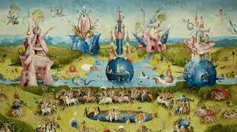
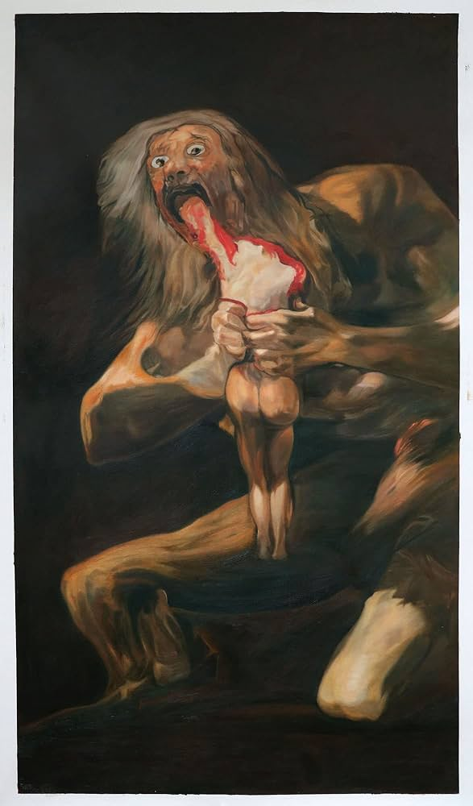

Información General
Ubicación: Madrid, España
Horario: 10:00 - 20:00
Precio: €15
Colecciones Destacadas
- Las meninas
- El jardín de las delicias
- Saturno devorando a su hijo
Historia y Arquitectura
Inaugurado en 1819, el Prado es uno de los principales museos de arte europeo. Su edificio neoclásico, diseñado por Juan de Villanueva, es un emblema de la cultura española.

Obra: Las meninas

Obra: El jardín de las delicias

Obra: Saturno devorando a su hijo